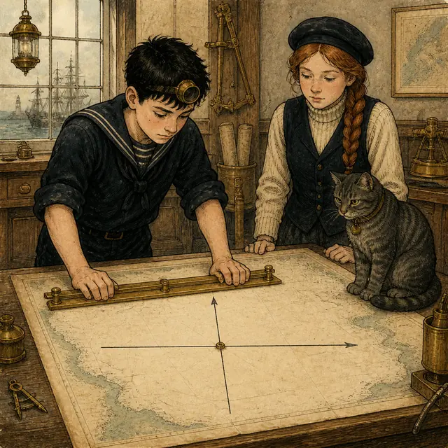
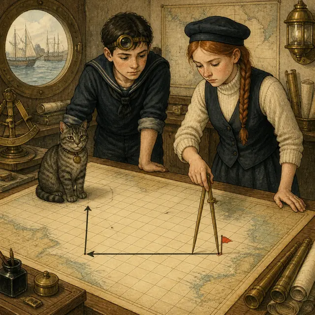

課前暖身漫畫：同一組數字，兩支旗子
領航員小汐把一張紙條推過製圖桌，上面只寫了一組數字：\((2,3)\)。見習製圖員阿岸接過來，在海圖上先橫著數 \(2\) 格、再直著數 \(3\) 格，插下一支小旗。小汐看了一眼，也插了一支——兩支旗子插在完全不同的兩個位置。原來阿岸讀成「橫 \(2\)、直 \(3\)」，小汐讀成「橫 \(3\)、直 \(2\)」。同一組數字，兩種讀法，船就會開到兩個地方去。所以在畫任何一張海圖之前，得先約好誰是橫的、誰是直的、從哪裡開始數——這正是這一節要建立的三件事：原點、\(x\) 軸、\(y\) 軸。約定好了以後，\((2,3)\) 和 \((3,2)\) 就是兩個不同的位置，再也不會有第二支旗子。
重點 1：平面的骨架——兩條數線與一個原點
重點整理與敘述
- 數對：像 \((2,3)\)、\((3,2)\) 這樣含有一對數字、而且有先後順序的表示方式。「第 \(2\) 排第 \(3\) 個」和「第 \(3\) 排第 \(2\) 個」是不同的座位，所以 \((2,3)\) 與 \((3,2)\) 是不同的數對。
- 直角坐標平面：在平面上作兩條互相垂直、且有共同原點的數線，這樣的平面稱為直角坐標平面，簡稱坐標平面。
- 四個名詞一次記清楚：
- ⑴ 水平的那條數線叫 \(x\) 軸，也叫橫軸。
- ⑵ 鉛垂的那條數線叫 \(y\) 軸，也叫縱軸。
- ⑶ 兩條合稱坐標軸；箭頭指的方向就是各自的正向。
- ⑷ 兩軸的交點叫原點，通常寫成大寫字母 \(O\)。
- 正向的約定：\(x\) 軸向右為正向，\(y\) 軸向上為正向。所以箭頭只畫在右端與上端，左端和下端是平的。
- 和數線比一比：數線有原點、正向、單位長；坐標平面只是把兩條這樣的數線垂直疊在一起，三個要素完全沿用，並沒有新東西。
- 為什麼平面需要兩個數字：一個數字只能沿一條線前後移動；平面上既要說「左右多遠」又要說「上下多遠」，所以非得一對不可。
| 數線（第一冊） | 坐標平面（本節） | |
|---|---|---|
| 幾條數線 | \(1\) 條 | \(2\) 條，互相垂直 |
| 原點 | \(1\) 個 | \(1\) 個，兩條共用 |
| 描述一個位置 | \(1\) 個數：\(A(2)\) | \(1\) 對數：\(A(2,3)\) |
| 正向 | 向右 | \(x\) 向右、\(y\) 向上 |

視覺互動探索：數對順序實驗台
調整兩個數字，看看把它們對調之後會插到哪裡去：
形成性評量 (平面的骨架)
Q1. 關於直角坐標平面，下列敘述何者正確？
解析：答案為 C。坐標平面由兩條互相垂直、共用同一個原點的數線構成，兩軸的交點就是原點 \(O\)。
A 把兩軸搞反了：水平的才是 \(x\) 軸（橫軸），鉛垂的是 \(y\) 軸（縱軸）。
B 錯在「不一定要垂直」：互相垂直是定義的一部分，斜著交叉就不是直角坐標平面。
D 把兩個正向都寫反了：\(x\) 軸向右為正、\(y\) 軸向上為正，所以箭頭只畫在右端與上端。
Q2. 已知 \(A(2m,\ m+5)\) 與 \(B(6,\ 8)\) 在坐標平面上表示同一個點，則 \(m\) 的值為何？
解析：答案為 A。兩個數對表示同一個點，代表對應位置的數字要一一相等：第一個對第一個、第二個對第二個。
\[\begin{aligned}
& x \text{ 坐標}：2m = 6 \Rightarrow m = 3 \\
&\quad y \text{ 坐標}：m+5 = 8 \Rightarrow m = 3 \\
&\quad \text{兩條解出來一致，所以 } m = 3
\end{aligned}\]
代回去檢查：\(A(6,8)\)、\(B(6,8)\)，確實是同一個點。
B 把兩個數對交叉對應了（拿 \(2m\) 去對 \(8\)），那樣會解出 \(m=4\)；坐標要比對的是同一個位置。
C 把 \(m+5=8\) 誤算成 \(m=8+5\)，移項時該減卻加。
D 錯在以為兩條式子矛盾：這裡兩條都解出 \(m=3\)，是一致的。
重點 2：坐標表示法——先橫後直，來回翻譯
重點整理與敘述
- 由數對找點（走路法）：從原點 \(O\) 出發，先沿 \(x\) 軸左右走，再沿 \(y\) 軸上下走，停下來的位置就是那個點。
- 由點寫數對（作垂線法）：過這個點分別作一條鉛垂線與一條水平線，看它們分別交在 \(x\) 軸、\(y\) 軸的哪個刻度，那兩個數就是它的坐標。
- 坐標的寫法：數對 \((m,n)\) 表示 \(P\) 點的位置時，記為 \(P(m,n)\)。其中 \(m\) 是 \(P\) 點的 \(x\) 坐標（橫坐標），\(n\) 是 \(y\) 坐標（縱坐標）。
- 順序永遠是「先 \(x\) 後 \(y\)」，就像先報排數再報座號。這也是 \((m,n)\) 與 \((n,m)\) 會標到不同位置的原因。
- 正負決定方向：\(x\) 坐標為正往右、為負往左；\(y\) 坐標為正往上、為負往下。
- 先上下再左右也會到同一點：從原點先向上走 \(4\) 再向左走 \(3\)，和先向左 \(3\) 再向上 \(4\)，落點完全一樣。走的順序可以換，但寫坐標的順序不能換——寫下來一定是 \((-3,4)\)。
- 坐標可以是分數或小數：\(D\left(1\frac{2}{3},-3\right)\) 就是沿 \(x\) 軸向右走 \(1\frac{2}{3}\) 單位、再向下走 \(3\) 單位。
| 坐標 | 先左右 | 再上下 |
|---|---|---|
| \(A(4,3)\) | 向右 \(4\) | 向上 \(3\) |
| \(B(-3,-2)\) | 向左 \(3\) | 向下 \(2\) |
| \(C(-3,4)\) | 向左 \(3\) | 向上 \(4\) |
| \(O(0,0)\) | 不動 | 不動 |
視覺互動探索：雙向翻譯台
切換兩種方法，看同一個點怎麼被找出來、又怎麼被讀出來：
形成性評量 (坐標表示法)
Q3. 在坐標平面上，從原點 \(O\) 出發，先向左走 \(6\) 單位，再向下走 \(2\) 單位，最後到達 \(P\) 點。則 \(P\) 點的坐標為何？
解析：答案為 C。向左是 \(x\) 軸的負向、向下是 \(y\) 軸的負向：
\[\begin{aligned}
& x \text{ 坐標}：\text{向左 } 6 \Rightarrow -6 \\
&\quad y \text{ 坐標}：\text{向下 } 2 \Rightarrow -2 \\
&\quad \text{所以 } P(-6,-2)
\end{aligned}\]
A 把兩個負號都漏掉，寫成向右 \(6\)、向上 \(2\)，方向整個相反。
B 負號對了，但把 \(x\) 與 \(y\) 對調——那是「向左 \(2\)、向下 \(6\)」的點。
D 同時犯了漏負號與對調兩個錯。
Q4. 坐標平面上有一點 \(Q\)，它在 \(y\) 軸右方 \(7\) 單位、在 \(x\) 軸下方 \(2\) 單位。則 \(Q\) 點的坐標為何？
解析：答案為 B。要小心的是「離開哪一條軸」決定的是哪一個坐標：離開 \(y\) 軸走的是左右，管左右的是 \(x\)；離開 \(x\) 軸走的是上下，管上下的是 \(y\)。
\[\begin{aligned}
& y \text{ 軸右方 } 7 \Rightarrow x = 7 \\
&\quad x \text{ 軸下方 } 2 \Rightarrow y = -2 \\
&\quad \text{所以 } Q(7,-2)
\end{aligned}\]
A、D 都把兩個數字對調了，等於把「左右」當成「上下」讀。
C 把兩個數字對調之後又亂配了正負號。
記住這個口訣：離 \(y\) 軸多遠管的是 \(x\)，離 \(x\) 軸多遠管的是 \(y\)——這一點在重點 4 還會再用到一次。
重點 3：軸上的點——有一個坐標是 \(0\)
重點整理與敘述
- \(x\) 軸上的點：坐標一定是 \((m,0)\) 的形式。反過來，只要一個點的 \(y\) 坐標是 \(0\)，它就一定在 \(x\) 軸上。例：\((-5,0)\)、\((21.8,0)\)。
- \(y\) 軸上的點：坐標一定是 \((0,n)\) 的形式。反過來，只要一個點的 \(x\) 坐標是 \(0\)，它就一定在 \(y\) 軸上。例：\((0,2.4)\)、\((0,-107)\)。
- 原點：坐標是 \(O(0,0)\)，兩個坐標都是 \(0\)，所以它同時在 \(x\) 軸上，也在 \(y\) 軸上。
- 怎麼想才不會記反：從原點出發要停在 \(x\) 軸上，代表上下完全不能動，所以動的是左右、\(y\) 坐標必須是 \(0\)。停在 \(y\) 軸上同理。
- 坐標軸上的點不屬於任何一個象限。兩條軸是四個區域的界線，界線本身不歸任何一區——這是最常見的陷阱題（重點 8 會再談一次象限）。
- 所以「\((0,-7)\) 在第四象限」是錯的：它的 \(x\) 坐標是 \(0\)，落在 \(y\) 軸上，不屬於任何象限。
| 坐標 | \(x\) 坐標 | \(y\) 坐標 | 位置 |
|---|---|---|---|
| \((-5,0)\) | \(-5\) | \(0\) | \(x\) 軸上 |
| \((0,2.4)\) | \(0\) | \(2.4\) | \(y\) 軸上 |
| \((0,0)\) | \(0\) | \(0\) | 原點（兩軸都在） |
| \((3,-1)\) | \(3\) | \(-1\) | 不在軸上（在某個象限裡） |
視覺互動探索：離軸偵測器
試著把點停在某一條軸上——你會發現只有一種辦法：
形成性評量 (軸上的點)
Q5. 下列各點中，哪一個點在 \(y\) 軸上？
解析：答案為 D。在 \(y\) 軸上的點，坐標是 \((0,n)\) 的形式——也就是 \(x\) 坐標必須是 \(0\)。只有 \((0,-4)\) 的 \(x\) 坐標是 \(0\)。
A 與 C 的 \(y\) 坐標是 \(0\)，所以它們在 \(x\) 軸上，不是 \(y\) 軸。這正是最容易記反的地方。
B 的兩個坐標都不是 \(0\)，兩條軸都不在。
順帶一提，若某個點兩軸都在，那它只可能是原點 \((0,0)\)。
Q6. 對於「\(R(0,-9)\) 在坐標平面的第四象限內」這個說法，下列判斷何者正確？
解析：答案為 B。\(R(0,-9)\) 的 \(x\) 坐標是 \(0\)，所以它落在 \(y\) 軸上；而兩條坐標軸是四個象限的界線，界線上的點不屬於任何一個象限。
A 只看了 \(y\) 坐標就下結論。要進第四象限，必須 \(x\) 是正數、\(y\) 是負數；\(x=0\) 既不正也不負，連門檻都不到。
C 同樣忽略了 \(x=0\)：第三象限要求兩個坐標都是負數。
D 把兩條軸記反了。\(x\) 坐標是 \(0\) 對應的是 \(y\) 軸；要在 \(x\) 軸上，該是 \(y\) 坐標為 \(0\)。
重點 4：點到兩軸的距離——量的是另一個坐標
重點整理與敘述
- 核心結論：點 \(P(m,n)\) 到 \(y\) 軸的距離是 \(|m|\)；到 \(x\) 軸的距離是 \(|n|\)。
- 為什麼是交叉的：要離開 \(y\) 軸，必須左右移動，而管左右的是 \(x\) 坐標；要離開 \(x\) 軸，必須上下移動，管上下的是 \(y\) 坐標。所以「到 \(x\) 軸的距離」量的是 \(y\)，兩者永遠是交叉的。
- 為什麼要加絕對值：距離不會是負的。\(P(-3,-2)\) 在原點的左下方，但它到 \(y\) 軸就是 \(|-3|=3\) 單位、到 \(x\) 軸就是 \(|-2|=2\) 單位。
- 比大小時比的是絕對值：問「誰離 \(x\) 軸最近」，就是比 \(|n|\) 誰最小，跟正負號無關。\((5,-1)\) 比 \((5,3)\) 更靠近 \(x\) 軸。
- 軸上的點距離為 \(0\)：\(x\) 軸上的點到 \(x\) 軸的距離是 \(|0|=0\)，它本來就在上面。
- 常見錯誤：看到 \(A(5,-4)\) 就說「因為 \(|5|>|-4|\)，所以 \(A\) 到 \(x\) 軸比到 \(y\) 軸遠」。恰恰相反——\(5\) 是到 \(y\) 軸的距離，\(4\) 才是到 \(x\) 軸的距離，所以 \(A\) 離 \(x\) 軸比較近。
| 點 | 到 \(y\) 軸（左右） | 到 \(x\) 軸（上下） |
|---|---|---|
| \(P(-1,2)\) | \(|-1|=1\) | \(|2|=2\) |
| \(A(5,-4)\) | \(|5|=5\) | \(|-4|=4\) |
| \(B(-3,-2)\) | \(|-3|=3\) | \(|-2|=2\) |
| \(T(-2,0)\) | \(|-2|=2\) | \(|0|=0\) |
視覺互動探索：兩軸測距儀
移動旗子，看兩把尺各自量到什麼——注意哪一把尺對應哪一個坐標：
形成性評量 (點到兩軸的距離)
Q7. 坐標平面上有一點 \(P(-8,5)\)。設 \(P\) 到 \(x\) 軸的距離為 \(a\)、到 \(y\) 軸的距離為 \(b\)，則 \(a\)、\(b\) 分別是多少？
解析：答案為 A。兩個距離是交叉對應的：到 \(x\) 軸的距離量的是 \(y\) 坐標，到 \(y\) 軸的距離量的是 \(x\) 坐標。
\[\begin{aligned}
& a = |y| = |5| = 5 \\
&\quad b = |x| = |-8| = 8
\end{aligned}\]
B 把兩者對調，等於把「到 \(x\) 軸」量成 \(|x|\)——這是本節最常見的錯。
C、D 都把絕對值忘了：距離不會是負數，\(-8\) 不可能是一段長度。
Q8. 坐標平面上有 \(A\left(-\dfrac{7}{2},3\right)\)、\(B(2,-5)\)、\(C(-1,6)\) 三點。哪一點與 \(y\) 軸的距離最近？
解析：答案為 D。到 \(y\) 軸的距離量的是 \(x\) 坐標的絕對值，跟 \(y\) 坐標完全無關：
\[\begin{aligned}
& A：\left|-\frac{7}{2}\right| = \frac{7}{2} = 3.5 \\
&\quad B：|2| = 2 \\
&\quad C：|-1| = 1 \\
&\quad 1 < 2 < 3.5 \Rightarrow C \text{ 最近}
\end{aligned}\]
A 可能是拿 \(y\) 坐標 \(3\) 去比（\(3\) 看起來比 \(6\) 小），但那量的是到 \(x\) 軸的距離。
B 若只看正數、把兩個負的 \(x\) 排除掉，就會選它。
C 錯在以為負數不能比：加了絕對值之後全部變成長度，當然比得出來。
重點 5：平移（正推）——左右改 \(x\)、上下改 \(y\)
重點整理與敘述
- 只有一句話：左右移動只改 \(x\) 坐標，上下移動只改 \(y\) 坐標，另一個完全不動。
- 四個方向怎麼算：
- 向右 \(k\) 單位：\(x\) 坐標加 \(k\)。
- 向左 \(k\) 單位：\(x\) 坐標減 \(k\)。
- 向上 \(k\) 單位：\(y\) 坐標加 \(k\)。
- 向下 \(k\) 單位：\(y\) 坐標減 \(k\)。
- 寫成一條式子：\(A(a,b)\) 先向右 \(h\)、再向下 \(v\)，到達的點是 \((a+h,\ b-v)\)。兩個坐標各算各的，不會互相影響。
- 順序不影響結果：先左右再上下，和先上下再左右，落點一樣——因為兩個坐標各自獨立。
- 先算再判斷正負：\(A(1,2)\) 向左 \(4\) 得 \(1-4=-3\)，結果變成負數是正常的，代表它跨過 \(y\) 軸到左邊去了。
- 只動一個方向時，另一個坐標原封不動抄下來。\(A(1,2)\) 向上 \(2\) 得 \((1,4)\)，\(x\) 還是 \(1\)。
| 從 \(A(1,2)\) 出發 | \(x\) 坐標 | \(y\) 坐標 | 到達 |
|---|---|---|---|
| 向左 \(4\) | \(1-4=-3\) | 不變 \(=2\) | \((-3,2)\) |
| 向上 \(2\) | 不變 \(=1\) | \(2+2=4\) | \((1,4)\) |
| 向右 \(3\) 再向下 \(4\) | \(1+3=4\) | \(2-4=-2\) | \((4,-2)\) |
視覺互動探索：航行指令台
設定起點與兩段航程，看兩個坐標各自怎麼變：
形成性評量 (平移：正推)
Q9. 坐標平面上有一點 \(P(-2,4)\)。若從 \(P\) 點出發，先向右 \(7\) 單位，再向下 \(9\) 單位，最後到達 \(Q\) 點，則 \(Q\) 點的坐標為何？
解析：答案為 A。兩個坐標各算各的：
\[\begin{aligned}
& \text{向右 } 7：x = -2+7 = 5 \\
&\quad \text{向下 } 9：y = 4-9 = -5 \\
&\quad \text{所以 } Q(5,-5)
\end{aligned}\]
B 把兩個方向都做反了（向左 \(7\)、向上 \(9\)），得到 \(-2-7=-9\)、\(4+9=13\)。
C 只把「向下」做反成向上。
D 是把正確答案的兩個符號一起翻掉，那不對應任何一種走法。
Q10. 在坐標平面上，若從點 \((-2,3)\) 出發，先向下移動，再向右移動（兩段都確實有移動），則可能移動到下列哪一點？
解析：答案為 C。這題不必算出移動幾單位，只要看兩個坐標各往哪個方向變：
\[\begin{aligned}
& \text{向下} \Rightarrow y \text{ 變小} \Rightarrow y < 3 \\
&\quad \text{向右} \Rightarrow x \text{ 變大} \Rightarrow x > -2
\end{aligned}\]
只有 \(C(3,1)\) 同時滿足 \(3 > -2\) 且 \(1 < 3\)。
A 的 \(x=-5 < -2\)，那是向左走。
B 兩個條件都不合：向左又向上。
D 的 \(x\) 對了，但 \(y=6 > 3\) 是向上走。
重點 6：平移（回推）——已知終點，反求起點
重點整理與敘述
- 題型長這樣：不告訴你起點，只說「從某點出發，先向右 \(6\)、再向下 \(3\)，到達 \(F(4,-1)\)」，要你把起點找回來。
- 方法一：設未知數解方程式（課本主線）。設起點為 \(E(a,b)\)，把平移寫成兩條一元一次方程式： \[\begin{aligned} & \text{向右 } 6：a+6=4 \Rightarrow a=-2 \\ &\quad \text{向下 } 3：b-3=-1 \Rightarrow b=2 \\ &\quad \text{所以 } E(-2,2) \end{aligned}\]
- 方法二：從終點倒著走回去。把每一段指令換成相反方向再走一次：原本向右 \(6\) 就改成向左 \(6\)，原本向下 \(3\) 就改成向上 \(3\)。\(4-6=-2\)、\(-1+3=2\)，一樣得到 \(E(-2,2)\)。
- 兩種都對，挑順手的用。方法一比較不容易搞錯方向，也和之後的代數解題接得上；方法二算得快。不要記成「回推一定要用減法」——原本向左走時，回推反而是加。
- 最常見的錯：把指令照抄一次就當成答案（\(4+6=10\)、\(-1-3=-4\)）。那算的是「從 \(F\) 再往前走一趟」的位置，不是起點。
- 檢查方法：把算出來的起點照原題的指令正推一次，看看會不會回到題目給的終點。回得去才對。
| 原本的指令 | 方程式 | 倒著走 |
|---|---|---|
| 向右 \(6\) | \(a+6=4\) | 向左 \(6\)：\(4-6\) |
| 向下 \(3\) | \(b-3=-1\) | 向上 \(3\)：\(-1+3\) |
| 向左 \(5\) | \(a-5=\ ?\) | 向右 \(5\)：\(?+5\) |

視覺互動探索：回航推算台
給定終點與航行指令，把滑桿推到最後一步，看起點怎麼被解出來：
形成性評量 (平移：回推)
Q11. 坐標平面上有一點 \(E\)。若從 \(E\) 點出發，先向左 \(3\) 單位，再向上 \(6\) 單位，最後到達 \(F(2,1)\)，則 \(E\) 點的坐標為何？
解析：答案為 D。設 \(E(a,b)\)，把兩段指令寫成方程式：
\[\begin{aligned}
& \text{向左 } 3：a-3=2 \Rightarrow a=5 \\
&\quad \text{向上 } 6：b+6=1 \Rightarrow b=-5 \\
&\quad \text{所以 } E(5,-5)
\end{aligned}\]
倒著走也一樣：從 \(F(2,1)\) 改成向右 \(3\)、向下 \(6\)，得 \(2+3=5\)、\(1-6=-5\)。
A 是把指令照抄一次套在 \(F\) 上（\(2-3=-1\)、\(1+6=7\)），算出來的是「從 \(F\) 再走一趟」的落點。
B、C 各只倒對了一半：B 的 \(y\) 沒有倒回去，C 的 \(x\) 沒有倒回去。
驗算：從 \(E(5,-5)\) 向左 \(3\) 得 \(x=2\)、向上 \(6\) 得 \(y=1\)，確實回到 \(F(2,1)\)。
Q12. 已知從 \(M\) 點出發，先向右 \(a\) 單位，再向下 \(b\) 單位（\(a>0\)、\(b>0\)），最後到達 \(N\) 點。下列敘述何者正確？
解析：答案為 B。回推就是把每一段指令換成相反方向再走一次：向右換成向左、向下換成向上，走一樣的格數，當然回得到原處。設 \(M(m,n)\)：
\[\begin{aligned}
& N(m+a,\ n-b) \\
&\quad \text{向左 } a：(m+a)-a=m \\
&\quad \text{向上 } b：(n-b)+b=n
\end{aligned}\]
A 說反了：向右 \(a\) 單位（\(a>0\)）讓 \(x\) 坐標加 \(a\)，所以 \(N\) 的 \(x\) 坐標比較大。
C 錯：向下移動改的正是 \(y\) 坐標，兩點的 \(y\) 相差 \(b\)，只有 \(b=0\)（沒移動）時才會相同。
D 把兩個方向都倒錯了：\(x\) 該減 \(a\)、\(y\) 該加 \(b\)，剛好和選項寫的相反。
重點 7：自訂原點——原點換了，整張圖的坐標都換
重點整理與敘述
- 題型長這樣：給你一張沒有坐標軸的方格圖（棋盤、地圖、座位表），只告訴你其中一兩個位置的坐標，要你把其他位置的坐標寫出來。
- 三個步驟：
- ① 由已知點的坐標反推原點在哪：某點坐標是 \((4,3)\)，就代表原點在它的左方 \(4\) 格、下方 \(3\) 格。
- ② 通過原點把 \(x\) 軸與 \(y\) 軸沿格線畫出來。
- ③ 其餘的點照重點 2 的方法一一讀出坐標。
- 只要一個已知點就夠了（前提是方格的方向已經確定：右為 \(x\) 正向、上為 \(y\) 正向）。給兩個點通常是讓你順便核對單位長。
- 原點是「約定」，不是天生的。同一張地圖，把原點放在碼頭或放在燈塔，每個地標的坐標整組都會不一樣；但地標彼此之間的相對位置永遠不變——兩點的 \(x\) 坐標差、\(y\) 坐標差不會因為換原點而改變。
- 換原點的算法：新原點原本的坐標是 \((p,q)\)，那麼每個點的新坐標就是舊坐標各減掉 \((p,q)\)：\((x-p,\ y-q)\)。
- 畫坐標軸的實務問題：紙的大小有限，原點要放在能同時容納所有點的位置。左邊最遠的點需要多少格，原點左邊就要留多少格；上下同理。
| 地標 | 以碼頭為原點 | 改以燈塔為原點 |
|---|---|---|
| 碼頭 | \((0,0)\) | \((2,-2)\) |
| 燈塔 | \((-2,2)\) | \((0,0)\) |
| 浮標 | \((2,1)\) | \((4,-1)\) |
| 浮標與燈塔的差 | 兩套坐標算出來都是 \((4,-1)\)，不隨原點改變 | |
視覺互動探索：海圖重繪台
換一個地標當原點，看整張海圖的坐標全部改寫：
形成性評量 (自訂原點)
Q13. 一張方格地圖上有燈塔、碼頭、浮標三個地標。已知燈塔在碼頭的正西方 \(4\) 格、正北方 \(2\) 格；浮標在碼頭的正東方 \(3\) 格、正南方 \(1\) 格。若把這張地圖看成坐標平面，以燈塔為原點，向東為 \(x\) 軸正向、向北為 \(y\) 軸正向，一格為一單位長，則浮標的坐標為何？
解析：答案為 A。先把碼頭的坐標找出來，再由碼頭走到浮標：
\[\begin{aligned}
& \text{燈塔在碼頭西 } 4 \text{ 北 } 2 \\
&\quad \Rightarrow \text{碼頭在燈塔東 } 4 \text{ 南 } 2 \\
&\quad \Rightarrow \text{碼頭} = (4,-2) \\
&\quad \text{浮標} = (4+3,\ -2-1) \\
&\quad \phantom{\text{浮標}} = (7,-3)
\end{aligned}\]
B 把浮標算成在碼頭的正西方 \(3\) 格（\(4-3=1\)），方向弄反了。
C 的 \(x\) 對了，但把「浮標在碼頭南方 \(1\) 格」做成了北方（\(-2+1=-1\)）。
D 把整組坐標的符號都翻掉，等於沒有照題目「向東為正、向北為正」的約定去讀。
Q14. 想在一張方格紙上沿著格線畫出 \(x\) 軸、\(y\) 軸並標出原點，以小方格邊長為單位長。若要讓 \((6,2)\)、\((-3,-4)\)、\((-2,5)\)、\((4,-3)\) 四點都落在紙上，則原點的左方至少要留 \(a\) 格、下方至少要留 \(b\) 格。\(a\)、\(b\) 分別是多少？
解析：答案為 C。原點左方要留的格數，由最負的那個 \(x\) 坐標決定；下方要留的格數，由最負的那個 \(y\) 坐標決定：
\[\begin{aligned}
& x \text{ 坐標}：6,\ -3,\ -2,\ 4 \\
&\quad \Rightarrow \text{最負是 } -3 \Rightarrow a=3 \\
&\quad y \text{ 坐標}：2,\ -4,\ 5,\ -3 \\
&\quad \Rightarrow \text{最負是 } -4 \Rightarrow b=4
\end{aligned}\]
A 挑到的是第二負的 \(-2\) 與 \(-3\)，那樣 \((-3,-4)\) 就跑出紙外了。
B 拿的是最大的正數 \(6\) 與 \(5\)，那算的是原點右方與上方要留的格數。
D 把 \(a\) 與 \(b\) 對調了：左右由 \(x\) 決定、上下由 \(y\) 決定。
補充：右方至少要留 \(6\) 格、上方至少要留 \(5\) 格，所以整張紙至少要 \(3+6=9\) 格寬、\(4+5=9\) 格高。
重點 8：四個象限——光看正負號就知道在哪一區
重點整理與敘述
- 象限：\(x\) 軸與 \(y\) 軸把坐標平面分成四個區域，每個區域都叫一個象限。
- 編號方向：從右上角那一塊開始，以逆時針方向依序稱為第一、第二、第三、第四象限。
- 四組符號規則：
- 第一象限 \((+,+)\)：\(x\)、\(y\) 都是正數。
- 第二象限 \((-,+)\)：\(x\) 負、\(y\) 正。
- 第三象限 \((-,-)\)：\(x\)、\(y\) 都是負數。
- 第四象限 \((+,-)\)：\(x\) 正、\(y\) 負。
- 兩個方向都成立：在第二象限內的點，符號一定是 \((-,+)\)；反過來，符號是 \((-,+)\) 的點也一定在第二象限內。所以判象限只要看兩個符號，數字大小完全不影響。
- 怎麼記編號：\(x\) 的正負決定左右、\(y\) 的正負決定上下，先定出「右上／左上／左下／右下」，再對照逆時針的一、二、三、四。不必死背四組符號。
- 坐標軸上的點不屬於任何象限（重點 3 已經說過）：只要有任何一個坐標是 \(0\)，它就落在界線上，四個象限都不歸它。
- 「在第幾象限」是位置，不是大小：\((0.1,0.1)\) 和 \((300,900)\) 同樣都在第一象限。
| 位置 | 象限 | \((x,y)\) 符號 | 例 |
|---|---|---|---|
| 右上 | 第一象限 | \((+,+)\) | \((3,5)\) |
| 左上 | 第二象限 | \((-,+)\) | \((-5,8)\) |
| 左下 | 第三象限 | \((-,-)\) | \((-2,-4)\) |
| 右下 | 第四象限 | \((+,-)\) | \((7,-4)\) |
| 界線上 | 不屬於任何象限 | 有一個是 \(0\) | \((21.8,0)\) |
視覺互動探索：四海域羅盤
移動旗子看它落在哪一塊——也試著把它停在界線上：
形成性評量 (四個象限)
Q15. 下列各點中，哪一個點在第二象限內？
解析：答案為 B。第二象限的符號規則是 \((-,+)\)，也就是 \(x\) 坐標負、\(y\) 坐標正。只要看符號，數字是分數還是小數都不影響： \[\begin{aligned} & A：(+,+) \Rightarrow \text{第一象限} \\ &\quad B：(-,+) \Rightarrow \text{第二象限} \\ &\quad C：(-,-) \Rightarrow \text{第三象限} \\ &\quad D：(+,-) \Rightarrow \text{第四象限} \end{aligned}\] C 最容易誤選：它的 \(x\) 確實是負的，但 \(y\) 也是負的，兩個都負就落到左下角的第三象限去了。判象限一定要兩個符號一起看。
Q16. 關於坐標平面上的象限，下列敘述何者正確？
解析：答案為 D。符號規則是雙向的：第三象限的點兩坐標都負，而兩坐標都負的點也必定在第三象限。
A 只看了一半：\(x\) 為負只能確定它在 \(y\) 軸左邊，還要再看 \(y\) 的正負才知道是左上的第二象限、還是左下的第三象限。
B 把第四象限寫成第三象限的規則了。第四象限在右下，符號是 \((+,-)\)。
C 錯：坐標軸上的點不屬於任何一個象限，兩條軸是四塊區域的界線，界線本身不歸任何一區。
重點 9：由符號運算判象限——先定正負，再對照
重點整理與敘述
- 題型長這樣：已知 \(A(s,t)\) 在第二象限內，問 \(B(t,|s|)\)、\(C\left(-s,\dfrac{s}{t}\right)\) 各在第幾象限。這種題目算不出數字，只能判斷正負。
- 三步驟：
- ① 由已知的象限，定出 \(s\)、\(t\) 各自的正負。（第二象限 \(\Rightarrow s<0\)、\(t>0\)）
- ② 把每一個分量逐一判斷正負。
- ③ 拿這組符號對照四象限的規則，寫出答案。
- 常用的判號工具：
- \(|\ \ |\)：絕對值一定 \(\ge 0\)；只要裡面不是 \(0\)，就是正。
- \(-s\)：把 \(s\) 的符號翻過來。\(s<0\) 時 \(-s>0\)。
- 平方 \(s^2\)：只要 \(s \ne 0\) 就是正，不管 \(s\) 本身正負。
- 兩數相乘或相除：同號得正、異號得負。
- 加減要小心，不見得判得出來：\(s+t\) 在 \(s<0\)、\(t>0\) 時可能正、可能負、也可能是 \(0\)，光看符號定不下來。但 \(s-t\)（負減正）一定是負的——同號相加、異號相減才判得準。
- 符號寫在旁邊，不要在腦中換算：像課本 Hint 那樣把 \(B(t,|s|)\) 一路改寫成 \((+,|-|) \to (+,+)\)，錯誤率會低很多。
| 已知 \(s<0\)、\(t>0\) | 推理 | 符號 |
|---|---|---|
| \(B(t,|s|)\) | \(t\) 正、\(|s|\) 正 | \((+,+)\) 第一象限 |
| \(C\left(-s,\dfrac{s}{t}\right)\) | \(-s\) 正、負除以正得負 | \((+,-)\) 第四象限 |
| \(D(st,s^2)\) | 異號相乘得負、平方為正 | \((-,+)\) 第二象限 |
| \(E(s+t,\ ?)\) | 負加正，正負不定 | 判不出來 |
視覺互動探索：符號推算盤
先指定 \(A(s,t)\) 在哪一個象限，再選一個式子，看符號怎麼一步步定下來：
形成性評量 (由符號判象限)
Q17. 已知 \(P(a,b)\) 在第二象限內，則 \(Q(-a,|b|)\) 與 \(R(ab,\ a-b)\) 分別在第幾象限內？
解析：答案為 A。先由第二象限定出 \(a<0\)、\(b>0\)，再逐一判斷四個分量：
\[\begin{aligned}
& -a：a \text{ 為負} \Rightarrow -a \text{ 為正} \\
&\quad |b|：\text{絕對值} \Rightarrow \text{正} \\
&\quad ab：\text{負乘正} \Rightarrow \text{負} \\
&\quad a-b：\text{負減正} \Rightarrow \text{負}
\end{aligned}\]
所以 \(Q\) 的符號是 \((+,+)\)，在第一象限；\(R\) 的符號是 \((-,-)\)，在第三象限。
B 把 \(a-b\) 誤判成正：負數再減掉一個正數只會更負。
C 把 \(|b|\) 誤判成負——絕對值不可能是負的。
D 把 \(-a\) 的符號沒有翻過來，直接沿用 \(a\) 的負號。
Q18. 已知 \(ab<0\) 且 \(b>0\)，則 \(P(a,b)\) 與 \(Q(b-a,\ ab)\) 分別在第幾象限內？
解析：答案為 C。這題沒有直接告訴你象限，要先從兩個條件把 \(a\) 的符號逼出來：
\[\begin{aligned}
& ab<0 \Rightarrow a \text{ 與 } b \text{ 異號} \\
&\quad b>0 \Rightarrow a<0 \\
&\quad P(a,b)：(-,+) \Rightarrow \text{第二象限} \\
&\quad b-a：\text{正減負} \Rightarrow \text{正} \\
&\quad Q(b-a,\ ab)：(+,-) \\
&\qquad \Rightarrow \text{第四象限}
\end{aligned}\]
A 把 \(P\) 判成第三象限，等於把題目給的 \(b>0\) 忘掉了。
B 把 \(b-a\) 誤判成負——正數減掉一個負數只會變得更大，一定是正的。
D 把 \(P\) 的兩個符號對調了。\(ab<0\) 這個條件本身還不能定出誰正誰負，一定要配上 \(b>0\) 才行。
小節總結與核心回顧
直角坐標平面速查表
- 骨架：兩條互相垂直、共用同一個原點的數線。水平的是 \(x\) 軸（橫軸，向右為正），鉛垂的是 \(y\) 軸（縱軸，向上為正），交點是原點 \(O\)。
- 數對有順序：\((m,n)\) 與 \((n,m)\) 只有在 \(m=n\) 時才是同一個點。
- 標點：從原點先左右走 \(x\)、再上下走 \(y\)。讀坐標：過該點作鉛垂線與水平線，交在兩軸上的讀數就是坐標。
- 軸上的點：\(x\) 軸是 \((m,0)\)、\(y\) 軸是 \((0,n)\)、原點是 \((0,0)\)。坐標軸上的點不屬於任何象限。
- 到兩軸的距離是交叉的：\(P(m,n)\) 到 \(y\) 軸是 \(|m|\)、到 \(x\) 軸是 \(|n|\)。比遠近就是比絕對值。
- 平移正推：向右加、向左減都動 \(x\)；向上加、向下減都動 \(y\)。兩個坐標各算各的。
- 平移回推：設起點 \((a,b)\) 列方程式，或把每段指令換成反方向再走一次。算完拿原指令正推一次驗算。
- 自訂原點：由已知點反推原點位置，再沿格線畫兩軸。新原點原本是 \((p,q)\) 時，每個點的新坐標是 \((x-p,\ y-q)\)；點與點之間的差不會變。
- 四象限：右上起逆時針為一、二、三、四，符號依序是 \((+,+)\)、\((-,+)\)、\((-,-)\)、\((+,-)\)。判象限只看符號，與數字大小無關。
- 由符號運算判象限：先定 \(s\)、\(t\) 的正負，再逐個分量判號。\(|\ |\) 與平方必為正，\(-s\) 翻號，乘除同號得正異號得負；異號相加判不出來。
回到製圖室：一個數字不夠，兩個剛剛好
從一條線到一整片海
第一冊的數線只有一條，能講清楚的也只有「原點的左邊或右邊多遠」。可是海是一整片的，船可能在燈塔的西北方——這時候不管把數字說得多精確，只要是一個數字就注定說不清楚。
解法出乎意料地樸素：再拿一條數線來，讓它和原本那條垂直，並且共用同一個原點。沒有發明任何新東西，原點、正向、單位長三個要素全都沿用，可是能描述的範圍從一條線變成了一整片平面。這就是笛卡兒留下來的那個好主意。
整節都在做同一件事：翻譯
把 \((-3,4)\) 翻成海圖上的一個位置，是標點；把海圖上的一支旗子翻成 \((-3,4)\)，是讀坐標。把「向右 \(3\) 再向下 \(4\)」翻成坐標的加減，是平移；反過來由終點翻回起點，就是回推。連換一個地標當原點，也只是把整張海圖重新翻譯一遍。
所以真正要練熟的不是九件事，而是同一件事的九個方向。翻譯久了會發現一個很方便的副產品：有些問題根本不必算數字。想知道一個點在哪一區，看兩個正負號就夠了；想知道 \(Q(-a,|b|)\) 在哪一區，連 \(a\)、\(b\) 是多少都不用知道。
下一節：把方程式畫出來
這一節建好了舞台，卻還沒有請人上台。下一節要把上一章的二元一次方程式帶進這個坐標平面：\(x+y=5\) 有無限多組解，\((0,5)\)、\((1,4)\)、\((2,3)\)⋯⋯把它們一個一個標成點，會發現這些點乖乖地排成一條直線。
到那時候，上一章結尾埋的那句話就會兌現：聯立方程式的那組共同解，就是兩條直線交叉的那一點。代數與幾何，在這張海圖上第一次接上線。